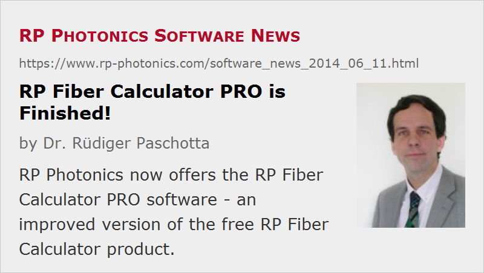

RP Fiber Calculator PRO is Finished!
Posted on 2014-06-11 in the RP Photonics Software News (available as e-mail newsletter!)
Permanent link: https://www.rp-photonics.com/software_news_2014_06_11.html
Author: Dr. Rüdiger Paschotta, RP Photonics Consulting GmbH
Abstract: RP Photonics now offers the RP Fiber Calculator PRO software - an improved version of the free RP Fiber Calculator product.
Ref.: description of the RP Fiber Calculator software

In March 2014 we started to offer the new fiber optics software RP Fiber Calculator for free. Since then, hundreds of people have downloaded it and appear to be quite happy with it. But now we have something even better: the further improved version RP Fiber Calculator PRO for which we sell licenses regularly. A number of additional features can be very helpful for professional work, be it in industry or in scientific work:
- Refractive index profiles can be determined by a mathematical expression. This is useful e.g., for defining parabolic profiles. You can control the index profile with some set of parameters instead of directly specifying values for different radial positions.
- Index profiles can also be determined via a doping profile (e.g., of germania in a germanosilicate fiber). The material data can include chromatic dispersion and can be edited by the user, e.g. in order to define additional glass materials.
- You can copy fiber designs, save them to files and load them again.
- You can edit index values numerically and not only by clicking into a diagram.
- Particularly useful is the new mode property display: you can display any mode properties and quantities calculated from those directly below the region where you edit your fiber design. For example, display some calculated merit function value in order to easily monitor the progress of a design optimization!
- You can now calculate higher-order modes with l and m indices up to 100 (instead of 20).
- You can calculate chromatic dispersion properties (if the index profile is determined by a doping profile with given material dispersion).
- Mode properties can be exported as numerical values (with user-defined formats) and plotted as functions of the wavelength.
- You can simulate how light is coupled from one fiber to another, considering influences like a mismatch of fiber properties, a lateral offset or angular offset of the fiber core. You can investigate the coupling between specific modes or all guided modes.
- You can simulate how light is reflected at a fiber end, considering influences like the cut angle of the fiber end, polarization and the divergence of the fiber modes.
In addition, that paid version comes with competent technical support – which you can even use for general advice on fiber optics.
Although the free version of RP Fiber Calculator is already quite powerful, there are plenty of reasons to consider buying licenses for the PRO version. We are not aware of any other product which could deliver so much help in fiber optics while staying in a moderate price region.
User feedback is welcome – including that from users of the free version – and may result in further improvements. Those having paid licenses will get free updates.
Note that our older (and already well established) product RP Fiber Power offers still more – in particular, calculations on active fibers (for fiber amplifiers and lasers) and full scripting support, which gives it an enormous flexibility.
This article is a posting of the RP Photonics Software News, authored by Dr. Rüdiger Paschotta. You may link to this page, because its location is permanent.
Note that you can also receive the articles in the form of a newsletter or with an RSS feed.
|  |
If you like this article, share it with your friends and colleagues, e.g. via social media:
These sharing buttons are implemented in a privacy-friendly way!